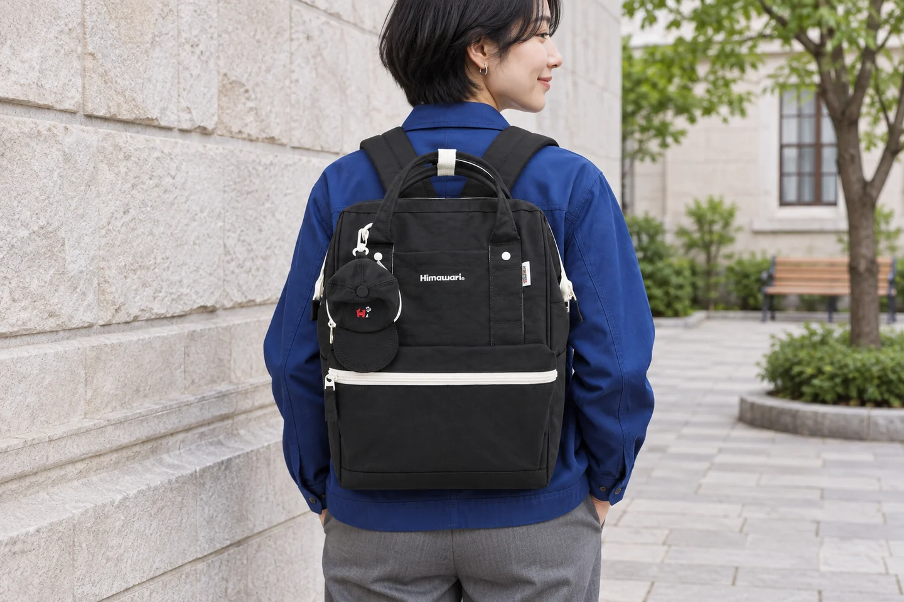
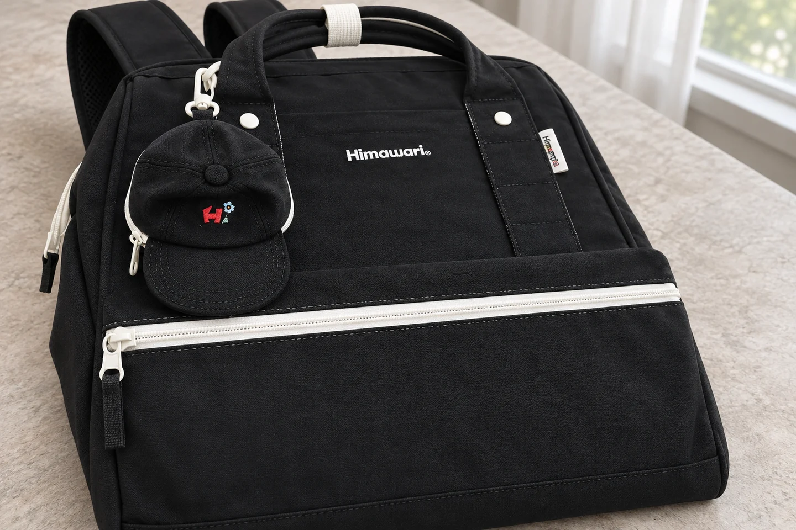
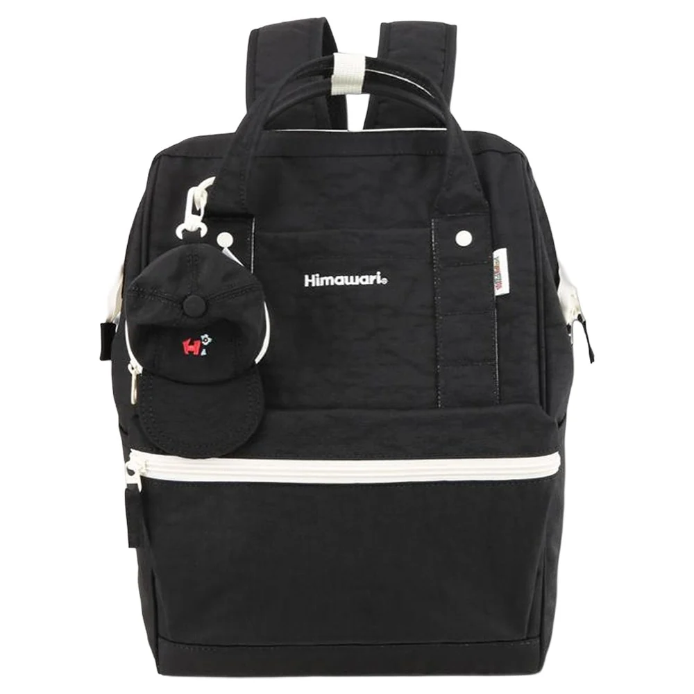

백팩의 흰 지퍼, 반사 기능은 어떻게 확인할까

검은 가방에서 흰 지퍼는 작은 사진에서도 눈에 띕니다. 히마와리 No.9007 블랙의 실제 사진에서도 가방을 가로지르는 흰 선이 먼저 보입니다. 검은 천과 나란히 있어서 밝은 곳에서도 지퍼 위치를 찾기 쉽습니다. 하나는 앞포켓을 열 때 손이 갈 곳을 찾는 문제입니다. 저녁에 빛을 받으면 멀리서도 잘 보이도록 만든 부품인지 궁금하다면 사진에 더해 부위별 제품 설명이 필요합니다.
사진 속 흰 선을 따라가 봅니다
앞면 사진에서 흰 선을 왼쪽 끝까지 따라가면 지퍼 머리와 검은 당김 끈이 보입니다. 아래에는 넓은 검은 앞포켓이 있고 그 위 왼쪽에는 작은 모자 모양 장식이 걸려 있습니다. 손잡이를 묶은 흰 띠와 앞판의 흰 글자도 보입니다. 화면에서 밝게 보이는 부분을 전부 같은 부품으로 묶어 부르면 정작 궁금한 지퍼를 특정하기 어렵습니다. 문의할 때는 ‘백팩 앞면 아래쪽을 가로지르는 흰 지퍼 테이프’처럼 위치와 부품을 함께 적는 편이 정확합니다.
흰 선이 어느 포켓에 붙었는지는 전체 사진에서 봅니다. 확대 사진에서는 지퍼 머리가 움직이는 선과 그 양쪽에 봉제된 천을 따로 볼 수 있습니다. 확대했을 때 지퍼 가장자리가 밝게 보인다고 그 부분의 재료나 가공까지 읽을 수 있는 것은 아닙니다. 같은 흰 천도 조명과 노출에 따라 밝기가 달라 보입니다. 사진으로는 색과 자리, 입구의 관계까지 확인해 둡니다.

‘흰색’과 ‘반사’가 적힌 곳은 따로 봅니다
상세 설명에서 먼저 선택한 옵션의 모델 번호와 색상을 맞춰 봅니다. 같은 제품군을 묶어 보여주는 페이지라면 위쪽 대표 사진의 모델과 펼친 옵션의 사진이 같은지도 확인합니다. 그다음 반사 소재를 썼다는 문장이 있으면 어느 부위에 적용했는지 읽습니다. 옆면의 작은 표식이나 별도 액세서리에 관한 설명이 앞 지퍼에도 적용된다고 생각하기 쉽습니다. 사진에 화살표가 붙기도 합니다. 그 끝을 보세요. 궁금한 흰 선을 가리키는지 확인합니다.
‘밝은 배색’, ‘눈에 띄는 지퍼’라는 문구는 사진에서 보이는 인상을 설명할 수 있습니다. 빛을 광원이 있는 쪽으로 되돌리는 성질을 재귀반사라고 합니다. 제품에 그 성질을 이용한 부품이 있는지는 적용 부위와 조건이 적힌 근거로 확인합니다. 반사 기능을 소개하는 문구가 있더라도 어느 거리나 각도에서 어느 정도 보이는지까지 필요하다면 그 주장에 대응하는 별도 자료를 살펴야 합니다. No.9007 블랙은 여기서 흰 지퍼가 있는 위치를 살피는 예입니다. 사진에서 지퍼의 색과 위치를 확인할 수 있습니다. 카탈로그 치수는 가방 전체 크기를 나타냅니다.
촬영 방향과 빛이 닿는 방향을 구별합니다
제품 페이지에서 흰 지퍼가 밝게 보이는 사진을 발견하면 정면과 옆면을 함께 봅니다. 같은 부품이 정면에서는 선 하나로 보이다가 옆에서는 몸판의 굽은 면 안쪽으로 사라질 수 있습니다. 백팩을 메면 앞포켓은 뒤를 향합니다. 카메라에는 지퍼가 선명할 수 있습니다. 옆에서도 같은 면이 보이는지는 가방을 다른 방향에서 봐야 합니다. 판매자가 별도의 반사 사진을 올렸더라도 설명에 표시된 부위와 사진 속 빛나는 부분이 겹치는지 먼저 봅니다. 밝은 바탕 전체가 눈에 띈다면 흰 선만 도드라지는 장면과 조건부터 다를 수 있습니다.
반대로 멀리서 가방이 보이는 조건을 확인하고 싶을 때 휴대전화 플래시로 가까이서 찍은 사진 한 장을 근거로 삼기는 어렵습니다. 빛과 카메라가 가깝고 거리도 짧은 조건에서 찍힌 결과이기 때문입니다. 사진에서 허옇게 날아간 부분은 천의 색과 카메라 노출에도 영향을 받습니다. 집 안에서 찍은 사진은 특정 조명에서의 인상을 비교하는 데 쓸 수 있습니다. 야외에서 어느 거리에서도 잘 보인다거나 어떤 용도로 쓸 수 있다고 결론을 내릴 자료는 따로 확인합니다.
다른 사진에서 반짝임이 아예 보이지 않았다는 이유만으로 해당 기능이 없다고 정하기도 이릅니다. 사진만으로 조명 위치를 알기 어렵기 때문입니다. 지퍼에 빛이 닿았는지도 확인하기 어렵습니다. 사진을 두고 판매자에게 문의할 때는 화면에 나타난 밝기를 근거로 설명하기보다 정확한 옵션과 지퍼의 위치를 지정하는 편이 서로 이해하기 쉽습니다. 기능이 있는 부위라면 판매 안내의 어느 문장에 해당하는지도 함께 확인할 수 있습니다.

물어볼 때 한 문장으로 좁혀 봅니다
상품 안내에 부위가 분명하게 적혀 있지 않다면 이렇게 묻습니다. ‘No.9007 블랙 앞포켓을 가로지르는 흰 지퍼 테이프에 반사 소재를 썼나요?’ 부위가 ‘지퍼’라고만 적혀 있으면 범위를 한 번 더 짚습니다. 지퍼 테이프 전체가 해당하나요? 옆 장식만을 가리킬 수도 있습니다. 적용한 소재나 부위 안내를 받을 수 있다면 같은 옵션의 실제 사진에 표시해 두면 다음에 자료를 다시 찾기 쉽습니다. 서로 다른 색상의 설명이 함께 붙은 페이지에서 특히 놓치기 쉬운 부분입니다.
배색이 마음에 들면 앞면 사진을 준비합니다. 자주 여는 포켓으로 흰 선이 이어지는지 봅니다. 평소 옷차림 위에서 가방을 멨을 때 눈에 띄는 자리도 확인할 수 있습니다. 저녁에 밖에서 멀리 보이는 기능이 구매 조건이라면 옵션에 맞는 부위와 설명이 확인될 때까지 그 칸을 비워 둡니다. 한 장의 사진으로도 배색은 고를 수 있습니다. 색과 위치를 확인한 사진은 남겨둡니다. 판매자 답변에 해당 부위를 적어 두세요. 같은 모델의 다른 색을 볼 때도 처음 확인한 사양을 다시 찾기 쉽습니다.